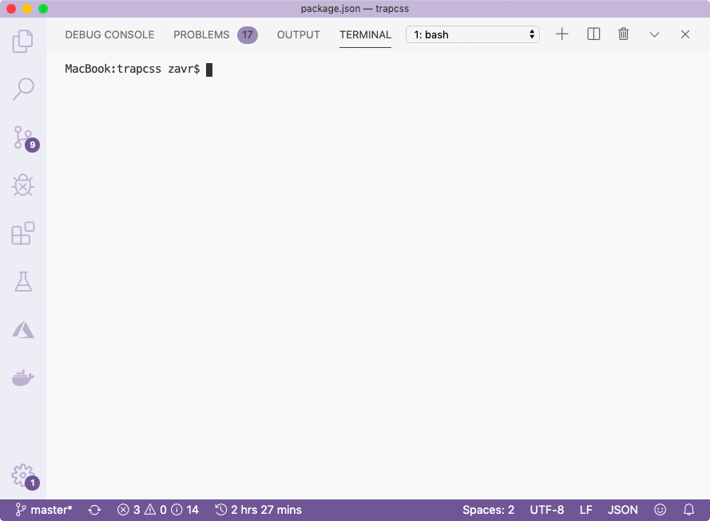
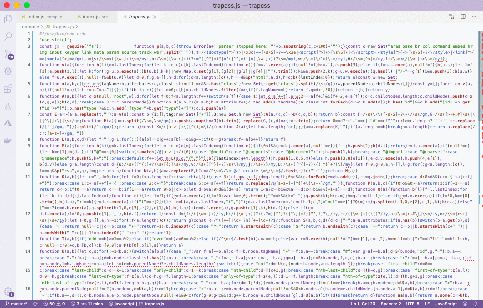
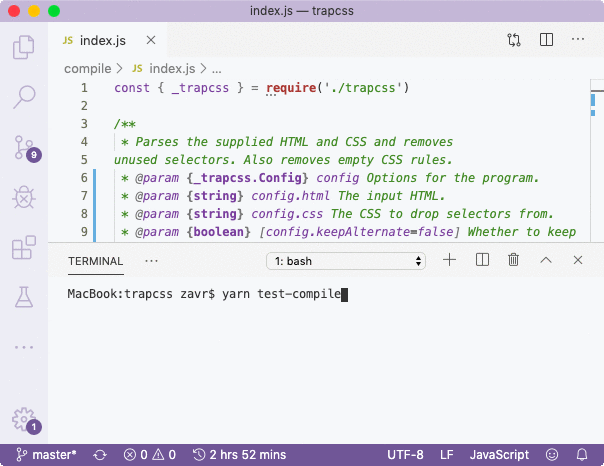
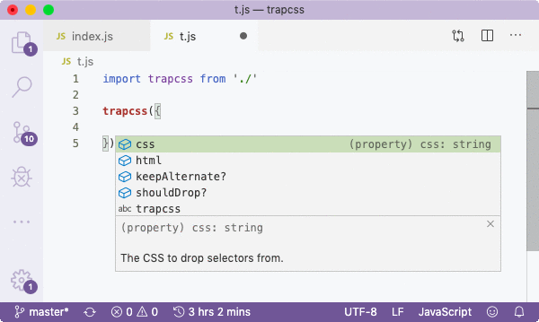

###! Running Compiler
The next step is to execute the compiler. The package that we installed contained a *jar* file, which needs to be passed to Java along with arguments. The arguments must also contain the list of all JS files in the program. That's why _Depack_ also contains a regex-based static analysis tool that scans all files for `import` statements, and builds a full list of all files. The algorithm can also detect `require` calls, however if at some point you want to use dynamic linking (so that a dependency is required at runtime, rather than compiled into your program), you can use the following construct:
```js
const pckg = require(/* depack */ 'dynamic-linking')
```
In this case, the regex won't pick up the require call. In addition, no require calls from the entry file that we're compiling end up in the arguments. Initially, this was a bug, but I decided to keep it as is, so that in binaries, we can simply do something like that:
```js
if (_version) {
console.log('v%s', require('../../package.json')['version'])
}
```
Importing JSON files with `import` also doesn't work in Closure (at least at the time of writing), so you'll need to require them, or read as text and use JSON.parse method to extract JS objects from them.
Since we've prepared and tested our source code already, we can just execute the compiler with command — ``depack src/depack.js -o compile/trapcss.js -a -c -p --source_map_include_content``:
- *src/depack.js*, the entry point to compile.
- *-o compile/trapcss.js*, the output location.
- *-a*, enable advanced optimisation.
- *-c*, indicates to _Depack_ that we're *c*ompiling a Node.JS package which enables Node externs.
- *--source_map_include_content*, to include content in source maps. The content is pretty useful, however VSCode won't be able to print the values of variables when you hover over then during [debugging](https://github.com/Microsoft/vscode/issues/12066) in which case you might want to pass `"sourceMaps": false` in your launch config when debugging compiled libs.
Other options could include `-p`, for pretty output, or `-O ES5`, to compile into really old code that could probably be able to run on Node 4 (given the API is supported). The default language output is ES2018. Source maps could be disabled with `-S`. Any other [options](https://github.com/google/closure-compiler/wiki/Flags-and-Options) to the compiler can also be just passed after the main command. And that's it, there's no config or anything.

Because of type checking, we also received a number of warnings. In part I, we kept the `keepText` argument, even though it wasn't used in the source code. The compiler was able to pick up the fact that the config type does not include such property, and that the ``parseHTML`` method doesn't accept the second argument either. It's really great to use compiler to polish our code so that there are no inaccuracies like that left and our source is 100% professional. It is not possible with _Babel_, perhaps only with _TypeScript_.
When we come to remove the `keepText` to fix the warning, let's also add the original MIT copyright on the package. The copyright owner didn't include any comment that would have to be preserved, therefore we're under no obligation to include it in our code (only in documentation), but let's do it anyway as good practice. I use the following template for MIT:
```js
/*!
* dropcss by Leon Sorokin
* https://github.com/leeoniya/dropcss
* Copyright(c) 2020
* MIT Licensed
*/
```
The compiled code is saved into *compile/trapcss.js* file. Let's just have a quick look.

There's the `use strict` directive, both licenses and the assignment to the ``module.exports`` property. On top, there's also a shebang which is not relevant to compiled libraries, but is needed when we'll be compiling binaries, however _Depack_ just keeps it anyway since it doesn't have any negative effect. If you need to disable `use strict`, you can pass the `-s` flag to _Depack_.
The template has already been prepared so now we actually have our package ready to be published, but we'd like to test the compiled module prior to publishing. Since we should be careful with advanced optimisation that can rename property names, we can now run all our tests but override the import of the source code to import of the compiled code. This is achieved with command — ``yarn test -e test-compile````npm test -- -- -e test-compile``. It simply calls the test script, but passes the `test-compile` variable as testing environment. The environments are configured in the `.alamoderc` file:
```json
{
"env": {
"test-compile": {
"import": {
"replacement": {
"from": "^((../)+)src$",
"to": "$1compile"
}
}
}
}
}
```
Now every time we require `../../src` from test, the transpiler will update it to `../../compile` on the fly (the ``$`` is needed in cases when we import methods from other files in the lib for unit testing, which would break testing as paths like *compile/html.js* don't exist). We can also set it to just `../..` since it will resolve to our *package.json* and read the ``main`` field from there. To ensure that the remapping actually happens, we can add a simple `throw new Error(1)` in the *compile/index.js* file and try to run this command.
```bash
Testing compile bin
Error: 1
Could not require test/spec
at Object. (/Users/zavr/adc/trapcss/compile/index.js:2:7)
at Module.p._compile (/Users/zavr/adc/trapcss/node_modules/alamode/compile/depack.js:49:18)
at Object.h.(anonymous function).y._extensions.(anonymous function) [as .js] (/Users/zavr/adc/trapcss/node_modules/alamode/compile/depack.js:51:7)
error Command failed with exit code 1.
```
There was an error, so the imports renaming was correct. Let's remove the error and run test again.

All tests pass which is good news! We can also create a test file called `t.js` in the project dir, and import the library to test for the presence of autocompletions:

After manual testing, we find that everything is correct. In _NodeTools 2_, we'll include a tool to write autocompletion tests since it's not feasible to keep rerunning such tests by hand. But for now, you can use this strategy.